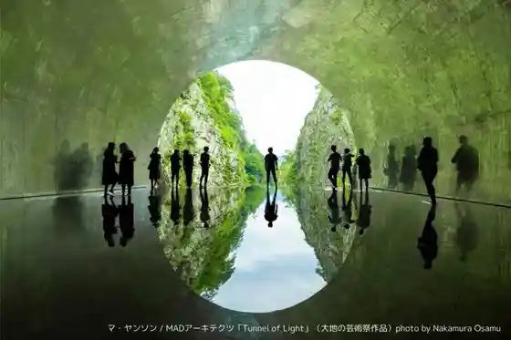
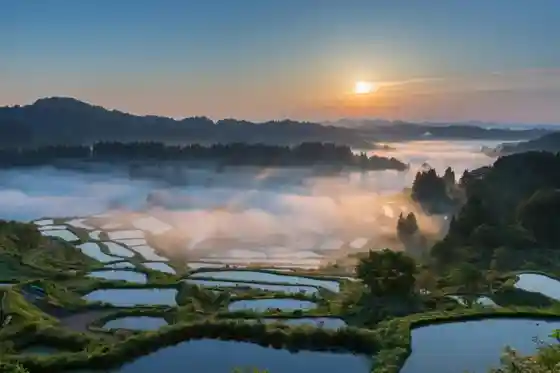
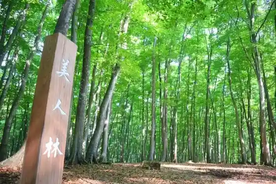
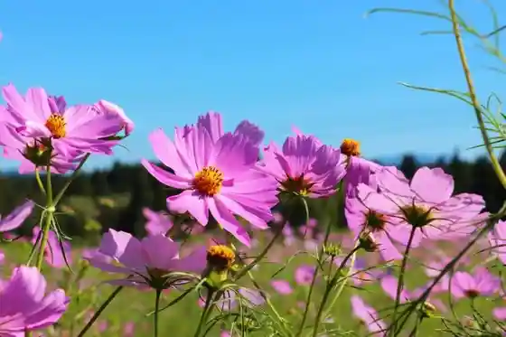

Seishin Kyo /Tunnel of Light
Tokamachi, Niigata · 025-763-4800 · Official / source link

Echigo Matsushiro Tanada Gun Hoshi Toge no Tanada
Tokamachi, Niigata · 025-597-3442 · Official / source link

Bijin Hayashi
Tokamachi, Niigata · 025-597-3442 · Official / source link

Atema Highlands no Kosumosu
Tokamachi, Niigata · 025-758-4141 · Official / source link

Dai 78 Kai Tokamachi Yuki Festival | Niigata Gosetsu Chi De Tanoshi Mu Fuyu no Saiten
Tokamachi, Niigata · 025-757-3100 · Official / source link
Sekki City (Chinkoro City)
Tokamachi, Niigata · 025-757-3100 · Official / source link
Muko Nage Sumi Nuri
Tokamachi, Niigata · 025-597-3442 · Official / source link
Nippon Sandai Yakuyu Matsunoyama Onsen no Kanko Gaido │ Onsengai no Arukikata
Tokamachi, Niigata · 025-597-3442 · Official / source link
Daichi no Geijutsu Matsuri Echigo Tsumari Atotoriennare 2027
Tokamachi, Niigata · 025-761-7767 · Official / source link
Matsudai Shiba Toge Onsen Unkai
Tokamachi, Niigata · 025-597-3939 · Official / source link
Tokamachi Jomon Tour Zu
Tokamachi, Niigata · 025-757-3345 · Official / source link
no U Land Kurosawa Kanko Kuri Sarunashi Sono
Tokamachi, Niigata · 025-752-2824 · Official / source link
Roadside Station (Kurosuten Tokamachi) (Kokudo 117 Go)
Tokamachi, Niigata · 025-757-2323 · Official / source link
Tashiro no Nanatsu Kama
Tokamachi, Niigata · Official / source link
Kokuho Kaen Kata Doki
Tokamachi, Niigata · 025-757-5531 · Official / source link
Tokamachi Tateri Yama Science Museum Echigo Matsunoyama (Mori no Gakko) Kyororo
Tokamachi, Niigata · 025-595-8311 · Official / source link
Senju Onsen Sennen Baths
Tokamachi, Niigata · 025-768-2988 · Official / source link
Hotel Kamosu Mori
Tokamachi, Niigata · 025-596-2200 · Official / source link
▲ Echigo Tsumari Dai Gen Tera Kogen Campground
Tokamachi, Niigata · 025-596-2994 · Official / source link
Echigo Tsumari Satoyama Gendai Art Museum MonET (Mone)
Tokamachi, Niigata · 025-761-7766 · Official / source link
Hikari no Kan
Tokamachi, Niigata · 025-761-1090 · Official / source link
Seto Gorge
Tokamachi, Niigata · 025-757-3345 · Official / source link
Echigo Tsumari Koryu Kan (Akashi Baths)
Tokamachi, Niigata · 025-752-0117 · Official / source link
Matsudai Yukiguni Nokobunka Village Center (no Butai)
Tokamachi, Niigata · 025-595-6180 · Official / source link
Roadside Station (Segae E no Sato Senda) (Kokudo 252 Go)
Tokamachi, Niigata · 025-761-2008 · Official / source link
Dai 38 Kai Setsugen Kanibaru Nakasato
Tokamachi, Niigata · 025-763-2511 · Official / source link
Echigo Matsudai Satoyama Shokudo
Tokamachi, Niigata · 025-594-7181 · Official / source link
Sennen no City
Tokamachi, Niigata · 025-768-4341 · Official / source link
Echigo Tsumari Daichi no Geijutsu Matsuri Ofisharu Tour
Tokamachi, Niigata · 025-761-7767 · Official / source link
Echigo Tsumari Kiyoda Yama Campground
Tokamachi, Niigata · 080-9415-1501 · Official / source link
Matsunoyama Onsen Center Taka Baths
Tokamachi, Niigata · 025-596-2221 · Official / source link
Nasutebyu Yu no Yama
Tokamachi, Niigata · 025-596-2619 · Official / source link
Seishin Kyo Onsen Sato
Tokamachi, Niigata · 025-761-7261 · Official / source link
Daichi no Geijutsu Matsuri Village
Tokamachi, Niigata · 025-761-7767 · Official / source link
Seishin Kawa Sakana Festival
Tokamachi, Niigata · 025-763-3012 · Official / source link
Atema Mori to Suihen no Kyoshitsu Popora
Tokamachi, Niigata · 025-758-4811 · Official / source link
Kuni Shitei Juyo Bunkazai (Matsu Cho Shrine)
Tokamachi, Niigata · 025-597-3442 · Official / source link
(Kabu) Matsuno I Shuzo Ba / (Matsuno I)
Tokamachi, Niigata · 025-768-2047 · Official / source link
Nanatsu Kama Park
Tokamachi, Niigata · 025-763-2511 · Official / source link
Ubusuna no Ie
Tokamachi, Niigata · 025-761-7767 · Official / source link
Echigo Matsudai Fuyu no Jin
Tokamachi, Niigata · 025-597-2220 · Official / source link
Tokamachi Museum TOPPAKU
Tokamachi, Niigata · 025-757-5531 · Official / source link
Tokamachi Sangyo Bunka Hasshin Kan Ikote
Tokamachi, Niigata · 025-755-5595 · Official / source link
Komatsubara Marsh
Tokamachi, Niigata · 025-757-3345 · Official / source link
Shrine Jikan Oto Do · Yamato
Tokamachi, Niigata · 025-752-3765 · Official / source link
▲ Echigo Tsumari Matsunoyama Onsen Su no Park (Matsunoyama Onsen Ski Area)
Tokamachi, Niigata · 025-596-3133 · Official / source link
Kyuchu Shima Onsen Mion Nakasato
Tokamachi, Niigata · 025-763-4811 · Official / source link
Roadside Station (Matsudai Furusato Hall) (Kokudo 253 Go)
Tokamachi, Niigata · 025-597-3912 · Official / source link
Ju Chi Oike Shizenkansatsu Plaza
Tokamachi, Niigata · 080-9415-1501 · Official / source link
Yama no Ie Cafe&Dormitory
Tokamachi, Niigata · 025-595-6770 · Official / source link
Hara Town Onsen Yukura Tsumari
Tokamachi, Niigata · 025-763-2944 · Official / source link
Chojagahara Park Cherry Blossoms
Tokamachi, Niigata · 025-757-3345 · Official / source link
Echigo Matsushiro Tanada Gun Gamo no Tanada
Tokamachi, Niigata · 025-597-3442 · Official / source link
Gi Mei no Tanada
Tokamachi, Niigata · Official / source link
Saigo no Kyoshitsu
Tokamachi, Niigata · 025-761-7767 · Official / source link
Suwa Shrine
Tokamachi, Niigata · 025-757-5102 · Official / source link
Yumori Tokoro Chiro
Tokamachi, Niigata · Official / source link
Yuki Asobi Kamakura Experience
Tokamachi, Niigata · 025-761-7433 · Official / source link
Satoyama no Tatsujin Takushii
Tokamachi, Niigata · 025-595-8588 · Official / source link
Shiki Sai Kan Beji Paku
Tokamachi, Niigata · 025-757-1549 · Official / source link
Niigata no Dento Kuwo Tsukuro U ! Sasa Dango Tsukuri Experience O Tegaru Kosu
Tokamachi, Niigata · 025-755-5080 · Official / source link
Yoshi Chi no Tanada
Tokamachi, Niigata · 025-757-3345 · Official / source link
Dendo Supotsusaikuru (Satoyama E- Baiku)
Tokamachi, Niigata · 025-757-3345 · Official / source link
Otogi no Kuni Art Museum
Tokamachi, Niigata · 025-757-9529 · Official / source link
Nunakawa Kyanpasu
Tokamachi, Niigata · 025-761-7767 · Official / source link
Nakasato Seishin Ski Area
Tokamachi, Niigata · 025-782-4501 · Official / source link
Shichirin Togei
Tokamachi, Niigata · 025-761-7433 · Official / source link
Seishin Kyo Gorge Mizu no Ritoriito │ Higaeri Ritoriito
Tokamachi, Niigata · 070-4559-8609 · Official / source link
Fushiguro Shiroato Campground
Tokamachi, Niigata · 025-768-4419 · Official / source link
Iwase Hotaru Village
Tokamachi, Niigata · Official / source link
Shirokura no Kasumizakura
Tokamachi, Niigata · 025-757-3345 · Official / source link
Omune Yama Bijutsu Museum
Tokamachi, Niigata · 025-596-2051 · Official / source link
Teirei Tancho Kai
Tokamachi, Niigata · 025-595-8311 · Official / source link
Ichigohausu
Tokamachi, Niigata · 025-761-7308 · Official / source link
Yukiguni De “ Kokoro Tokeau ” Otona Tabi │ Matsunoyama Onsen Tokanjiki Tanada Sanpode Ajiwa U, Fuyu no Satoyama Jikan
Tokamachi, Niigata · Official / source link
Joetsukokusai Ski Area Atema Gerende
Tokamachi, Niigata · 025-758-3291 · Official / source link
Eabodo / Matsunoyama Onsen Ski Area
Tokamachi, Niigata · 025-596-3133 · Official / source link
Popora Ki Iku Hiroba (Atema Mori to Suihen no Kyoshitsu Popora)
Tokamachi, Niigata · 025-758-4811 · Official / source link
Kizakura no Oka Park
Tokamachi, Niigata · 025-763-2511 · Official / source link
Karamushi no Nuno to Ha Wo Shiyo ! Sutoru Somoku Some Experience (1 Mai)
Tokamachi, Niigata · 025-750-2857 · Official / source link
Yanagi Shimizu
Tokamachi, Niigata · 025-597-3442 · Official / source link
Seishin Kawa Furesshu Park
Tokamachi, Niigata · 090-4328-2774 · Official / source link
Ta Ppo Biotopu Daisakusen
Tokamachi, Niigata · 025-758-4811 · Official / source link
Tanada Kanjiki Uoku & Setsujo Teiitaimu
Tokamachi, Niigata · Official / source link
Minna no Ie
Tokamachi, Niigata · 090-4961-1151 · Official / source link
Ajisai Park
Tokamachi, Niigata · Official / source link
Tokamachi no Ka Chanshoto Tsukuru Tore Tategottsuo
Tokamachi, Niigata · Official / source link
Matsushiro Famirii Ski Area
Tokamachi, Niigata · 025-597-3330 · Official / source link
Yuzen Some Wo Kigaru Ni Experience
Tokamachi, Niigata · 025-755-5515 · Official / source link
Yacho Kokeshi Tsukuri Experience
Tokamachi, Niigata · 025-597-3442 · Official / source link
Oi Ta no Sato Park Cherry Blossoms
Tokamachi, Niigata · 025-757-3345 · Official / source link
Tokamachi no Fochundoru ” Chinkoro ” Tsukuri Experience
Tokamachi, Niigata · Official / source link
Matsushiro Castle Ruins Park Campground
Tokamachi, Niigata · 025-597-2220 · Official / source link
Matsunoyama Onsen Taiko no Shio Ritoriito (Hannichi)
Tokamachi, Niigata · 080-9033-9969 · Official / source link
Matsunoyama Onsen Taiko no Shio Zukuri Experience
Tokamachi, Niigata · 080-9033-9969 · Official / source link
Kanu Kayakku Experience (▲ Echigo Tsumari Dai Gen Tera Kogen Campground)
Tokamachi, Niigata · 025-596-2994 · Official / source link
Tokamachi no Rekishi Wo Shiru Tabi - Jomon × Bunka Henn
Tokamachi, Niigata · 070-1317-1881 · Official / source link
Tsutsuji Hara Park
Tokamachi, Niigata · Official / source link
Kyanpufaiya (Kiyoda Yama Campground)
Tokamachi, Niigata · Official / source link
Dendo Ashisuto Jitensha (Sato Chari)
Tokamachi, Niigata · 025-750-1277 · Official / source link
Nakasato Seishin Annainin
Tokamachi, Niigata · 025-757-3345 · Official / source link
JR Shinanogawa Hatsudensho Kyuchu Shusui Dam (Taka no Su Dam)
Tokamachi, Niigata · Official / source link
Shokunin Tambo Tokamachi Kimo no GOTTAKU
Tokamachi, Niigata · 025-757-3139 · Official / source link
Niroku Koen Buna Hayashi
Tokamachi, Niigata · 025-757-3345 · Official / source link
Niigata Matsunoyama Sansai Sono
Tokamachi, Niigata · 025-596-3421 · Official / source link
Su no Baiku / Matsunoyama Onsen Ski Area
Tokamachi, Niigata · 025-596-3133 · Official / source link
Matsudai Local History Museum
Tokamachi, Niigata · 025-597-2138 · Official / source link
Toji Buta Zukuri
Tokamachi, Niigata · 025-595-8588 · Official / source link
Kojokengaku Yuzen Experience (Senshoku Kobo Aoyagi)
Tokamachi, Niigata · 025-757-2171 · Official / source link
Hoshi to Mori no Shi Art Museum
Tokamachi, Niigata · 025-752-7202 · Official / source link
(Te Egaki Yuzen Teori Ri Experience) Kichi Sai Kan 2 Gokan
Tokamachi, Niigata · 025-757-9529 · Official / source link
Matsushiro Shiroyama Ato Sansaku (Matsudai (no Butai) Fiirudo Museum)
Tokamachi, Niigata · 025-761-7767 · Official / source link
Matsushiro Hokuhoku Tori
Tokamachi, Niigata · Official / source link
Satoyama no Ikimono Tanken
Tokamachi, Niigata · 025-595-8311 · Official / source link
(Soba Uchi Experience) Soba Tokoro Atema (Berunateio Foramu Center Nai)
Tokamachi, Niigata · 025-758-4888 · Official / source link
Chinkorozukuri Experience (Atema Mori to Suihen no Kyoshitsu Popora)
Tokamachi, Niigata · 025-758-4811 · Official / source link
Setsugen Gakusha Toki Kan no Mi Eigyo
Tokamachi, Niigata · Official / source link
Osutoraria Hausu
Tokamachi, Niigata · 025-761-7767 · Official / source link
Bijin Hayashi Su no Shu to Irori Experience
Tokamachi, Niigata · 025-595-8588 · Official / source link
Gondora Tour / Atema Kogen Resort Berunateio
Tokamachi, Niigata · 025-758-4888 · Official / source link
Josetsusha Experience
Tokamachi, Niigata · 025-761-7433 · Official / source link
Tanada Ato
Tokamachi, Niigata · 025-597-3442 · Official / source link
Tokamachi Tanada Torekkingu (1 Haku 2 Nichi /2 Haku 3 Nichi)
Tokamachi, Niigata · Official / source link
Nakago Green Park
Tokamachi, Niigata · 025-768-4419 · Official / source link
Tsumari Su no Shu Tour
Tokamachi, Niigata · 070-2836-8559 · Official / source link
Patagorufukosu (Toma Kogen Resort Berunateio Foramu Center)
Tokamachi, Niigata · 025-758-2360 · Official / source link
Yuki Asobi Honyarado Experience
Tokamachi, Niigata · 025-761-7433 · Official / source link
Popora Kamakura Experience (Atema Mori to Suihen no Kyoshitsu Popora)
Tokamachi, Niigata · 025-758-4811 · Official / source link
Hachi & Tajima Seizo Ehon to Ki no Mi no Art Museum
Tokamachi, Niigata · 025-752-0066 · Official / source link
Arupusuadobencha
Tokamachi, Niigata · 025-758-4811 · Official / source link
Haru no Ibuki Wo Kanji Ru Sansai Tori Adobencha (Ranchi Tsuki)
Tokamachi, Niigata · Official / source link
Kokoro Bijin Haikingu
Tokamachi, Niigata · 025-595-8588 · Official / source link
Echigo Matsushiro Tanada Gun Gi Mei no Tanada
Tokamachi, Niigata · 025-597-3442 · Official / source link
Hosen Tera Nisen Nen Hasu
Tokamachi, Niigata · 025-752-2924 · Official / source link
Niigata no Dento Shoku (Sasa Dango) Tsukuri Experience
Tokamachi, Niigata · Official / source link
Shirokawa Damu Park
Tokamachi, Niigata · 025-597-3442 · Official / source link
Noguchi Mizu Basho Park
Tokamachi, Niigata · Official / source link
Toma Yama no Buna Hayashi
Tokamachi, Niigata · 025-758-4811 · Official / source link
Toma Yama
Tokamachi, Niigata · 025-758-4811 · Official / source link
Su no Rafuteingu / Atema Kogen Resort Berunateio
Tokamachi, Niigata · 025-758-4888 · Official / source link
Tsumari Eabodo Tour
Tokamachi, Niigata · 070-2836-8559 · Official / source link
Dento Wara Saiku Zori / Nuno Zori Tsukuri Experience
Tokamachi, Niigata · Official / source link
Nakate no Matsu Cho Shimizu
Tokamachi, Niigata · Official / source link
Kanu & Sutandoappupadorusafin Experience (▲ Echigo Tsumari Dai Gen Tera Kogen Campground)
Tokamachi, Niigata · 025-596-2994 · Official / source link
Hotaru no Yube
Tokamachi, Niigata · 025-758-4811 · Official / source link
Su no Land Foresutofearii (Berunateio)
Tokamachi, Niigata · 025-758-4888 · Official / source link
Shinanogawa Rafuteingu Tour (Asutoraru Orenji)
Tokamachi, Niigata · 070-2836-8559 · Official / source link
Mori no Horu Kosaku (Atema Mori to Suihen no Kyoshitsu Popora)
Tokamachi, Niigata · 025-758-4811 · Official / source link
Kyodoryori (Ambo) Tsukuri
Tokamachi, Niigata · 080-9415-1501 · Official / source link
Tsumari Su no Shu Tour (Night Kosu)
Tokamachi, Niigata · 070-2836-8559 · Official / source link
Bakkukantoriibaiku Taiken Tour (▲ Echigo Tsumari Dai Gen Tera Kogen Campground)
Tokamachi, Niigata · 025-596-2994 · Official / source link
Shoshinsha O Ko Sama Daikangei ! Kanu Experience 70 Fun Puran
Tokamachi, Niigata · Official / source link
Samanaito Tour
Tokamachi, Niigata · 025-758-4811 · Official / source link
(Ubusuna no Ie) Ni Toma Ru
Tokamachi, Niigata · 025-761-7767 · Official / source link
Poporakuesuto
Tokamachi, Niigata · 025-758-4811 · Official / source link
Yuki no Mori Su no Shu Tour (Atema Mori to Suihen no Kyoshitsu Popora)
Tokamachi, Niigata · 025-758-4811 · Official / source link
Yukigunitankentai (Atema Mori to Suihen no Kyoshitsu Popora)
Tokamachi, Niigata · 025-758-4811 · Official / source link
Chubingu / Atema Kogen Resort Berunateio
Tokamachi, Niigata · 025-758-4888 · Official / source link
Shinanogawa Rafuteingu (Mion Nakasato)
Tokamachi, Niigata · 025-763-4811 · Official / source link
Kodo Matsunoyama Kaido (Uesugi Gun Michi)
Tokamachi, Niigata · 025-597-3442 · Official / source link
Shissokan Wo Mankitsu ! Hakuryokumanten no Eabodo De Gerende Kasso
Tokamachi, Niigata · 070-2836-8559 · Official / source link
Teinei Na Rekucha Tsuki De Anshin !SUP Experience Sukuru 70 Fun Puran
Tokamachi, Niigata · 025-596-2994 · Official / source link
O Share Na Kukan De Tanoshi Mu ! Habariumu Tsukuri Experience
Tokamachi, Niigata · 025-758-4888 · Official / source link
Sutandoappupadorusafin /SUP Experience (▲ Echigo Tsumari Dai Gen Tera Kogen Campground)
Tokamachi, Niigata · 025-596-2994 · Official / source link
Kanjiki Experience
Tokamachi, Niigata · 025-761-7433 · Official / source link
Mokko Experience
Tokamachi, Niigata · 025-595-8311 · Official / source link
Tsukau Hodoni Aichaku Gawaku ! Jibun Dake no Mokusei Hashi Tsukuri (1 Zen)
Tokamachi, Niigata · 025-758-4888 · Official / source link
Tokamachi Kota Experience
Tokamachi, Niigata · 025-761-7433 · Official / source link
Muko Nage Taiken Go Rieki Supotto &24 Jikan Yu De Tamago
Tokamachi, Niigata · Official / source link
Tokamachi Tanada Torekkingu Shuraku Wo Meguru Rekishi Kosu
Tokamachi, Niigata · Official / source link
Kyukyoku no Yuki Asobi ! Gosetsu WARS
Tokamachi, Niigata · Official / source link
\ Monita Boshuchu / Miyako City Deha Era Renai (Kokoro Gatokeau) Jikan Wo Sugo Su, Ato to Satoyama Ni Deau Tabi
Tokamachi, Niigata · 025-757-3345 · Official / source link
Chiro Haji Experience
Tokamachi, Niigata · 025-595-8311 · Official / source link